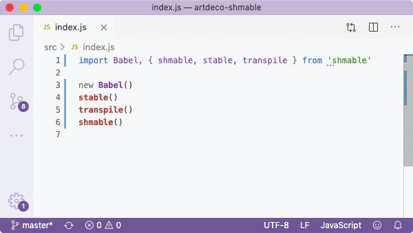
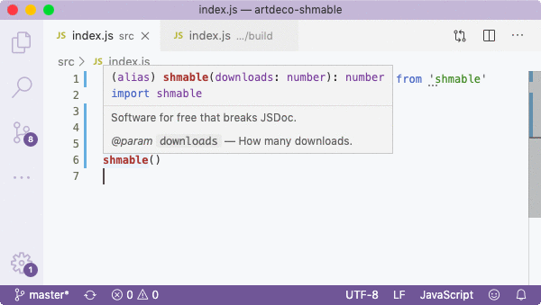

##! Babel R U OK
That's the title of [an issue that I opened](r-u-ok) in _Babel_'s repository after I discovered one of the most devastating bugs in the entire _Node.JS_ ecosystem. I already wasn't happy with having to use a transpiler with 265 transient dependencies (via npm, 250 via yarn) for every package that I created just because I liked the `import` syntax and believed that it was essential to follow the modern day standard. Although with an SSD and fibre-optics it doesn't take that long to download and link dependencies and rebuild `fsevents` (still takes about 30s), in summer 2018 I was downshifting from Sky to mobile 3G and became conscious of inbound/outbound data, as well as worked on an older iMac with a standard hard drive. Therefore, every new package I started took a few minutes to initialise due to all linking that had to be done against Babel's bloatware (the `linking N...` number actually grows exponentially). But what I found about this popular transpiler in August that year, really upset me.
_So let's take an example that uses ES6 modules, i.e., the JS standard [since mid 2015](history):_
Above is just an example code with a default export followed by 3 named exports which are functions with _JSDoc_ annotations. _JSDoc_ is just as important as the code itself, especially for complex programs that accept configs, so that developers who consume our package (and more importantly, ourselves), can use it easily, receive access to autocompletion hints and feel secure that they work process is correct. _JSDoc_ is crucial for productivity and developer experience, so we usually pay a lot of attention to documenting our code.
The source however needs to be transpiled since imports and exports are not understood. The convention is to use _Babel_. My setup is minimal required to transpile imports/exports, with `@babel`'s core, cli, and transform plugin (latest versions as of 1 Feb 2020). Just to enable modules, I need to install about 250 dependencies, but that's half the trouble.
```json
{
"name": "shmable",
"scripts": {
"b": "babel src -d build"
},
"dependencies": {
"@babel/cli": "^7.8.4",
"@babel/core": "^7.8.4",
"@babel/plugin-transform-modules-commonjs": "^7.8.3"
}
}
```
_And see how it is compiled:_
```js
"use strict";
Object.defineProperty(exports, "__esModule", {
value: true
});
exports.shmable = exports.transpile = exports.stable = exports.default = void 0;
var _stream = _interopRequireWildcard(require("stream"));
// ˅ ˅ ˅ CLICK TO EXPAND ˅ ˅ ˅
```

The problems start, when we publish the package with transpiled code, and require it from other packages. I call my new bug example package _shmable_, which you can install yourself.

When consuming the package and its transpiled source code from another project, there's no _JSDoc_ documentation whatsoever for named exports... Why?
```js
const transpile = hello => {
return hello + 'world';
};
/**
* Software for free that breaks JSDoc.
* @param {number} downloads How many downloads.
*/
exports.transpile = transpile;
const shmable = downloads => {
return downloads - 1000000;
};
```
If you look at the code above, you can see how _Babel_ inserted the exports assignment of one function right between the next exported function and its _JSDoc_! And it repeated it for all named exports! Only default is fine because it came first and because it's a class so that _Babel_ cannot insert an assignment between the constructor and its _JSDoc_. We can fix the issue manually:
```js
exports.transpile = transpile;
/**
* Software for free that breaks JSDoc.
* @param {number} downloads How many downloads.
*/
const shmable = downloads => {
return downloads - 1000000;
};
```
And the problem goes away.

Here you go folks. The most known, popular and industry-standard _free_ software recklessly destroys _JSDoc_ of all _Node.JS_ package makers who are diligently documenting their code to leave those hints behind for themselves and colleagues, hoping to get that autocompletion when it'll be needed the most, but it'll never be there. In other words, I'd been carefully and honestly producing my _JSDoc_ for all methods, just for the tool that I extorted to use by Node.JS itself which couldn't make modules happen since 2015 (while having to tolerate 250 dependencies), to effortlessly destroy all my efforts. It's not an issue with the IDE, it's an issue with the transpiler. ``Babel`` R U OK?